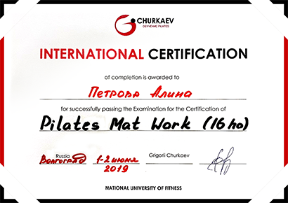
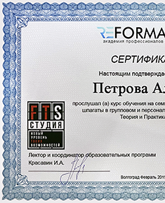
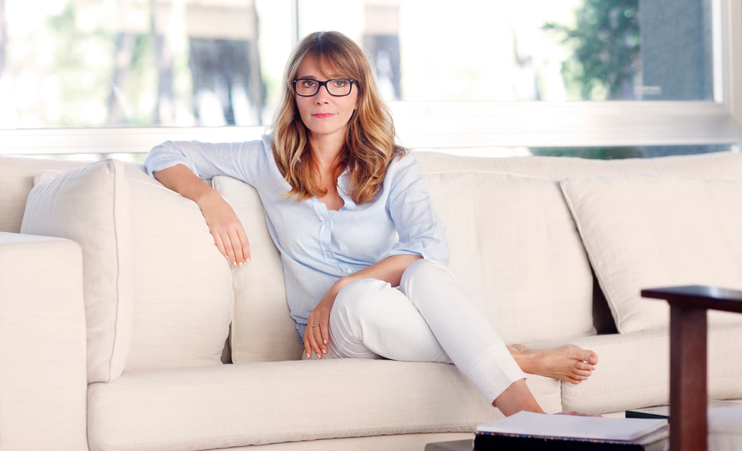
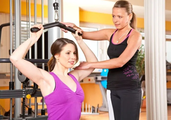
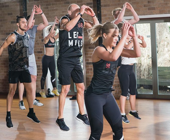
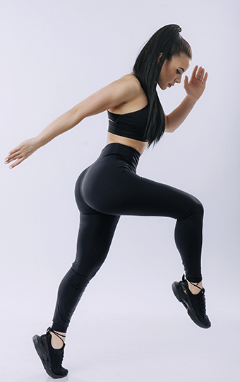

<!DOCTYPE html>
<html lang="ru">

<head>
  <meta charset="UTF-8">
  <meta name="viewport" content="width=device-width, initial-scale=1.0">
  <meta http-equiv="X-UA-Compatible" content="ie=edge">
  <link rel="stylesheet" href="css/style1.css">
  <link rel="stylesheet" href="css/style.css">
  <link rel="stylesheet" href="js/jquery-ui-1.13.0.custom/jquery-ui.css">
  <link rel="stylesheet" href="/resources/demos/style.css">
  <script src="js/jquery-ui-1.13.0.custom/external/jquery/jquery.js"></script>
  <script src="js/jquery-ui-1.13.0.custom/jquery-ui.js"></script>
  <title>Об Алине</title>
</head>

<body>
  <div class="front-page">
    <div class="wrap_side-bar">
      <div class="side-bar">
        <div class="side-bar_full_default">
          <div class="side-bar_header">
            <a href="http://petrova-alina.ru">
              
            </a>
            <a href="http://petrova-alina.ru">
              
            </a>
          </div>
          
          <div class="side-bar_profile">
            <div class="wrapAvaAndText">
              <div class="ava_default"></div>
              <span class="text_Input not_authorized">Вход</span>
              <span class="authorized-user text_UserName displayNone">Stepanchik</span>
            </div>
            <button class="button_register not_authorized">Регистрация</button>
            <span class="authorized-user button_exit displayNone">ВЫХОД</span>
            <div class="wrap_sidebar_profile"></div>
          <!-- /.wrap_sidebar_profile -->
          </div>
          <!-- /.side-bar_profile -->
          <div class="list">
            <a href="http://petrova-alina.ru/katalog">
              <div class="catalog">
                
                
                <div class="catalog_text">Каталог</div>
              </div>
            </a>
            <!-- /.catalog -->
            <a href="http://petrova-alina.ru/trenirovki">
              <div class="exercise">
                
                
                <div class="exercise_text">Тренировки</div>
              </div>
            </a>
            <!-- /.exercise -->
            <a href="http://petrova-alina.ru/chat">
              <div class="chat">
                
                
                <div class="chat_text">Чат</div>
              </div>
            </a>
            <!-- /.chat -->
            <a href="http://petrova-alina.ru/ob-aline">
              <div class="about">
                
                
                <div class="about_text">ОБ АЛИНЕ</div>
              </div>
            </a>
            <!-- /.about -->
            <a href="http://petrova-alina.ru/faq">
              <div class="faq">
                
                
                <div class="faq_text">FAQ</div>
              </div>
            </a>
            <!-- /.faq -->
            <a href="http://petrova-alina.ru/reviews">
              <div class="review">
                
                
                <div class="review_text">ОТЗЫВЫ</div>
              </div>
            </a>
            <!-- /.review -->
            <a href="http://petrova-alina.ru/pitanie" class="displayNone authorized-user">
              <div class="nutrition">
                
                
                <div class="nutrition_text">ПИТАНИЕ</div>
              </div>
            </a>
            <!-- /.nutrition -->
            <a href="http://petrova-alina.ru/dinamika" class="displayNone authorized-user">
              <div class="progress">
                
                
                <div class="progress_text">ДИНАМИКА</div>
              </div>
            </a>
            <!-- /.progress -->
            <a href="http://petrova-alina.ru/stati" class="displayNone authorized-user">
              <div class="article">
                
                
                <div class="article_text">СТАТЬИ</div>
              </div>
            </a>
            <!-- /.article -->
            <a href="http://petrova-alina.ru/konkursy" class="displayNone authorized-user">
              <div class="contest">
                
                
                <div class="contest_text">Конкурсы</div>
              </div>
            </a>
            <!-- /.contest -->
          </div>
          <!-- /.list -->
          <div class="side-bar_feedback">
            <div class="feedback-text">
              <span>Есть вопросы? Наша служба поддержки работает 24/7. Пиши!</span>
              
            </div>
            <!-- /.feadback-text -->
            <button class="feedback-button">ЗАДАТЬ ВОПРОС</button>
          </div>
          <!-- /.side-bar_feadback -->
          <div class="question displayNone">
            <a class="question-button" href="#">
              
              
            </a>
          </div>
        </div>
        <!-- /.side-bar_full_default -->
      </div>
      <!-- /.side-bar -->
    </div>
    <!-- /.wrap_side bar -->

    <div class="about-alina-page">
      <div class="header__about-alina-page">
        <h1>О ТРЕНЕРЕ</h1>
      </div>
      <!-- /.header__about-alina-page -->
      <div class="body-sculptor__about-alina-page">
        <div class="body-sculptor__text">
          <h3 class="body-sculptor__h3">Скульптор твоего тела</h3>
          <h2 class="body-sculptor__h2">Алина Петрова</h2>
          <div class="body-sculptor__p">
            <p>Салют, дружок!</p>
            <p>Ромелу Лукаку официально вернулся в «Челси»: Роман Абрамович заплатил «Интеру» 115
              лямов евро за бельгийского нападающего.
            </p>
            <p>
              А это значит, что Лукаку забрался наверх топа футболистов с самой большой суммой
              трансферов за карьеру — за все переходы Ромелу выложили более 327 миллионов
            </p>
          </div>
          <!-- /.body-sculptor__p -->
        </div>
        <!-- /.body-sculptor__text -->
        
        <!-- /.img__body-sculptor -->
      </div>
      <!-- /.body-sculptor__about-alina-page -->
      <div class="stats__about-alina-page">
        <div class="stats__item">
          <div class="stats__number">37</div>
          <div class="stats__text">работающих программ для любого уровня подготовки</div>
        </div>
        <div class="stats__item">
          <div class="stats__number">55000</div>
          <div class="stats__text">общительных эмпатичных подписчиков</div>
        </div>
        <div class="stats__item">
          <div class="stats__number">14</div>
          <div class="stats__text">августа «Ротор» поглотит «Балтику» дома</div>
        </div>
      </div>
      <!-- /.stats -->
      <div class="education__about-alina-page">
        <div class="education__text">
          <h3 class="education__h3">Образование</h3>
          <div class="education__p">
            <p>
              В июле Зарема начала войну с топ-менеджментом «Спартака» и с каждым сообщением добавляла жёсткости. В
              какой-то момент она перешла на аудио, где были мощные цитаты.
            </p>
            <p>
              Одно из объяснений: глубокое погружение в дела клуба захватывало на старте, но потом утомило, от тренеров
              и трансферов перешли к обсуждению ответственных за продажу вип-мест. Зарема отправляла в среднем 23
              сообщения в день, переварить весь этот поток оказалось не так просто.
            </p>
          </div>
          <!-- /.education__p -->
        </div>
        <!-- /.education__text -->
        
        <!-- /.img__education -->
      </div>
      <!-- /.education__about-alina-page -->

      <div class="slogan__about-alina-page">
        
        <h2 class="slogan__text">Уже сутки прошли после поражения«Спартака» от «Бенфики»; кажется, в вылетевсе уже
          обвинили друг друга</h2>
        
      </div>
      <!-- /.slogan__about-alina-page -->

      <div class="experience__about-alina-page">
        <div class="experience__bg-text">
          <div class="experience__text_passion">Моя страсть</div>
          <div class="experience__text_fitness">ФИТНЕС</div>
        </div>
        
        <div class="experience__text">
          <h2 class="experience__text_header">ОПЫТ РАБОТЫ</h2>
          <div class="experience__text_content">
            <p>Похоже, самую адекватную реакцию на поражение выдал Руй Витория: «Касаемо молодых игроков — мы всё
              понимаем. Чтобы играть хорошо, нам нужна революция в плане комплектования команды. Опыт игроков нам
              необходим для роста.</p>
            <p>Я доволен игроками, но мы все понимаем, что есть разница — играть в РПЛ и ЛЧ». Витория не скажет об этом
              публично, но у «Спартака» есть слабые позиции даже по меркам РПЛ — причём проблемы тянутся на протяжении
              нескольких сезонов.</p>
          </div>
        </div>
      </div>
      <!-- /.experience__about-alina-page -->

      <div class="slider slider__about-alina-page">
        <div class="slider__img">
          <div class="slider__frame">
            
            
          </div>
          <div class="slider__frame slider__next-frame">
            
            
          </div>
        </div>
        <div class="slider__control">
          
          <div class="number-page">
            <span id="current-page">1</span>
            <span class="divider__pages">/</span>
            <span id="total-pages">18</span>
          </div>
          
        </div>
      </div>
      <!-- /.slider -->

      <div class="baner__about-alina-page">
        
      </div>
      <!-- /.baner__about-alina-page -->

      <div class="why-i__about-alina-page">
        <h2 class="why-i__header">ПОЧЕМУ Я</h2>
        <div class="why-i__content">
          <p>
            От пива пузо растёт, хотя и от водки тоже. Когда её переберёшь, начинаешь есть всё без разбору. Иногда и
            пива охота, иногда и водки нужно выпить. Здесь не отдаю предпочтения никакому напитку.
          </p>
          <p>
            Фитцжеральд запросто мог отправить пик на помойку, выбрав своего младшего сына Брендана, но внезапно включил
            голову.
          </p>
          <p>
            Бардакова задрафтовали только с третьей попытки. Да, он по сути ролевик для нижних звеньев, но мы взяли
            почти такого же игрока в первом раунде! Парадоксально, но проспект, выбранный «дьяволами» ниже всех,
            запросто может доехать в НХЛ самым первым.
          </p>
        </div>
        <!-- /.why-i__content -->
      </div>
      <!-- /.why-i__about-alina-page -->

      <div class="slogan__about-alina-page">
        
        <h2 class="slogan__text">Потеря Нэйтана Бастиана привела к острой нехватке злого громилы в атаке</h2>
        
      </div>
      <!-- /.slogan__about-alina-page -->

      <div class="text__about-alina-page">
        <p>После перерыва некоторым игрокам даже дорисовали фломастером недостающие цифры, только судья это не оценил. Благо, нашлась запасная форма. А Слуцкий после матча успел пошутить про экологический дождь в Польше, к которому форма была не готова.</p>
        <p>Но оказалось, что это не всё. В ответном матче «Рубин» добил тему с легендарным проколом с помощью спонсоров: на протяжении всей игры на билбордах появляется аббревиатура букмекерской компании с нарисованными или отклеивающимися буквами — как было неделю назад в Польше.</p>
      </div>
      <!-- /.text__about-alina-page -->

      <div class="foto__about-alina-page">
        <div class="foto__left">
          
          
        </div>
        <div class="foto__right">
          
        </div>
      </div>
      <!-- /.foto__about-alina-page -->

      <div class="text__about-alina-page">
        <p>В РПЛ пошли навстречу Валерию Карпину и перенесли шестой тур чемпионата на 25–28 августа. Решение связано с матчами сборной России в квалификации ЧМ-2022.</p>
        <p>Я очень благодарен клубам за то, что теперь у сборной будет два-три полноценных дня на подготовку. Понятно, что это не гарантия того, что мы всех обыграем, но перенос поможет нам выступить лучше — это факт.</p>
        <p>Теперь понял?</p>
      </div>
      <!-- /.text__about-alina-page -->

      <div class="button__about-alina-page">
        <button class="button__select-course">Выбрать курс</button>
      </div>
      <!-- /.button__about-alina-page -->

      <div class="signature__about-alina-page">
        
      </div>
      <!-- /.signature__about-alina-page -->


    </div>
    <!-- /.about-alina-page -->
  </div>
  <!-- /.front-page -->

  <div class="wrap-footer">
    <div class="footer">
      <span class="footer_copyright">© 2021–2026 Alina Petrova™</span>
      <a href="#" class="footer_download_google_play"></a>
      <a href="#" class="footer_download_app_store"></a>
      <div class="footer_social_media">
        <a class="a-social-media" href="#">
          
          
        </a>      
        <a class="a-social-media" href="#">
          
          </a>
        </a>
        <a class="a-social-media mt3" href="#">
          
          
        </a>      
        <a class="a-social-media" href="#">
          
          
        </a>      
        <a class="a-social-media" href="#">
          
          
        </a>      
      </div>
    </div>
    <!-- /.footer -->
  </div>
  <!-- /.wrap-footer -->
  <script src="js/main.js"></script>
</body>

</html>